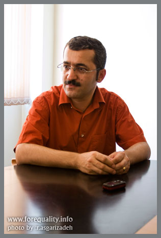
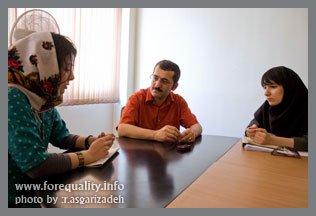
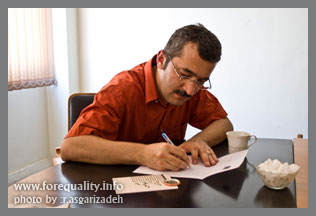

پذيرش > تریبون > گفت و گو > اگر كمپين به پيروزي برسد و مواد قانوني هم عوض شود، هنوز آغاز راه است
 محمد یعقوبی نویسنده و کارگردان تئاتر: تئوريزه شدن انفعال ديگر بس است ما نياز به صراحت داريم محمد یعقوبی نویسنده و کارگردان تئاتر: تئوريزه شدن انفعال ديگر بس است ما نياز به صراحت داريم

 اگر كمپين به پيروزي برسد و مواد قانوني هم عوض شود، هنوز آغاز راه است اگر كمپين به پيروزي برسد و مواد قانوني هم عوض شود، هنوز آغاز راه است
8 مهر 1387 - گفتگوی نوشین جعفری و آزاده فرامرزی ها با محمد یعقوبی - نسخه قابل چاپ
محمد یعقوبی نویسنده و کارگردان تئاتر و موسس گروه تئاتر امروز (و بعدها گروه این روزها) کار حرفه ای خود را به طور رسمی از سال 1376 آغاز نموده و کارنامه موفق و درخشانی در این حوزه دارد. دستمایه بیشتر آثار یعقوبی, مسائل, معضلات و پیچیدگی های اجتماعی است که باعث بروز مشکلاتی نیز برای او شده است: نمایشنامه " از تاریکی" او شش سال است که مجوز اجرا دریافت نمی کند؛ این نمایشنامه به بحث زنا و مجازات آن در قانون می پردازد. تحصیلات آقای یعقوبی در زمینه حقوق قضایی است. گفتگوی ما را با ایشان می خوانید:
- اصولاً درمیان کسانی که در كمپين يك ميليون امضاء كار هنري انجام ميدهند دغدغهاي وجود دارد راجع به اينكه چقدر هنر ميتواند در فعاليتهاي اجتماعي نقش داشتهباشد و اصولاً چه ميانبري وجود دارد از طريق هنر به مسائل اجتماعي. ميخواهيم بدانيم شما به عنوان يك كارگردان مؤلف چقدر به مسائل اجتماعي و آسيبهاي اجتماعي در كارتان اهميت ميدهيد و به عقيدهي شما آيا فعاليت اجتماعي و هنر ارتباطي با هم دارند؟

 واقعيت اين است كه من بيشتر به عنوان كسي كه كارهايم اجتماعي است شناخته شده هستم و كارهايم ويژگي اجتماعي دارد، پس به اين موضوع اعتقاد دارم كه اين كار را ميكنم و صرفنظر از اعتقاد، فكر ميكنم اين را بلدم. يعني من اين شناخت را دارم و بايد راجع به چيزي بنويسم كه از آن شناخت دارم. ضمن اينكه هيچوقت فراموش نميكنم من پيش از اينكه تئاتر كار كنم زماني كه فقط تماشاگر تئاتر بودم چه توقعي از تئاتر داشتم. فراموش نميكنم كه هميشه دلم ميخواست خودم را جلوهاي از خودم را به عنوان يك ايراني در تئاترها ببينم. دلم ميخواست نمايشي ببينم كه خودم را در آن اثر احساس كنم. در واقع بحث كاركرد اجتماعي هنر ارتباط عميقي دارد با مخاطب شناسي. در نتيجه شروع كردم به نوشتن به آن شكلي كه خودم دوست ميدارم. بله من اعتقاد دارم كه هنر بايد كاركرد اجتماعي و خاصيت اجتماعي داشتهباشد. واقعيت اين است كه من بيشتر به عنوان كسي كه كارهايم اجتماعي است شناخته شده هستم و كارهايم ويژگي اجتماعي دارد، پس به اين موضوع اعتقاد دارم كه اين كار را ميكنم و صرفنظر از اعتقاد، فكر ميكنم اين را بلدم. يعني من اين شناخت را دارم و بايد راجع به چيزي بنويسم كه از آن شناخت دارم. ضمن اينكه هيچوقت فراموش نميكنم من پيش از اينكه تئاتر كار كنم زماني كه فقط تماشاگر تئاتر بودم چه توقعي از تئاتر داشتم. فراموش نميكنم كه هميشه دلم ميخواست خودم را جلوهاي از خودم را به عنوان يك ايراني در تئاترها ببينم. دلم ميخواست نمايشي ببينم كه خودم را در آن اثر احساس كنم. در واقع بحث كاركرد اجتماعي هنر ارتباط عميقي دارد با مخاطب شناسي. در نتيجه شروع كردم به نوشتن به آن شكلي كه خودم دوست ميدارم. بله من اعتقاد دارم كه هنر بايد كاركرد اجتماعي و خاصيت اجتماعي داشتهباشد.
- يادمان ميآيد كه يكي از معروفترين نمايشنامههاي چند سال پيش از اين، نمايشنامهي "شب بخير مادر" بود كه اساساً يك نمايشنامهي فمينيستي است.
البته بايد بدانيد برخي از فمينيستها هم به شدت با نمايشنامهي شب بهخير مادر مشكل دارند و معتقدند كه مارشا نورمن نويسندهي آن اثر زن را بسيار ضعيف نشان داده است.
- در كارهاي شما نقش زنان هميشه نقش خيلي مهمي بوده، حتي در نمايشنامه "ماه در آب" كل بار نمايشنامه بر دوش يك زن بود و آيسودا نقش خيلي پررنگي بود. ميخواهيم بدانيم اصولاً چقدر از زنهاي جامعه يا زنهاي اطرافتان در نگارش نمايشنامهها كمك ميگيريد و چقدر براي شما مهم است كه به زنان نقش بدهيد، نقشهاي متفاوت نه فقط نقشهاي خاص يك نويسنده يا روشنفكر، منظورمان يك نقش عام است.
در همان "ماه در آب" نقش عام هم وجود دارد مادر نماد سنت است. و اما اين كه چقدر كمك ميگيرم يا اينكه چقدر نظر ميخواهم، راستش من چنين كاري نميكنم. آدمها را ميبينم و دربارهي آنها مينويسم و حالا كه دربارهي "ماه در آب" صحبت ميكنيم يادم ميآيد زماني كه "ماه در آب" را اجرا ميكردم يك مصاحبه با "ايران تئاتر" كردم. خانمي كه با من مصاحبه ميكرد از من پرسيد چرا در نمايشنامههايتان زن خيلي كاراكتر مهمي است و چرا در "ماه در آب" اهميت حضورش بيشتر احساس ميشود؟ من آنجا جملهاي گفتم كه عميقاً به آن اعتقاد دارم ولي آن حرفم چاپ نشد. گفتم مشكلي كه زنان در كشور ما دارند فقط توسط خود زنان ميتواند رفع شود. نقطه ضعف حاکمیت زنان هستند. در آن زمان احساس ميكردم خوشحالم خبرهايي ميخوانم حاكي از اينكه زنان به مسائل خودشان آگاه شدند. به نظر من مشكلي كه در سيستم ما وجود دارد فقط از طريق زنان و با طرح مسئلهي زنان ميتواند حل شود. طرح مسئلهي زنان در ظاهر يك مسئلهي مختص به اين جنسيت است ولي در واقع در پشت آن هدفمندي بسيار بزرگتري است كه دفاع از شأن انسان است. شخصيت آيسودا در نمايشنامهام كاري را ميكند كه جامعهي ما نمي پسندد و اين براي من خيلي مهم بود. وقتي همسرش تركش ميكند با برادر همسرش ازدواج ميكند كه اصلاً در كشور ما مسألهي جالبي نيست. آيسودا هيچ عمل غيرقانوني و حتي هيچ عمل غيراخلاقي انجام نداده است او فقط با برخي باورهاي غلط جاافتاده در جامعهي ما درافتاده است. فكر ميكنم به همين دليل آيسودا نقشي بود كه ديده شد، چون زن جسوري است. چون از مرزي گذشت كه بيشتر زنان از آن نميگذرند. بيشتر زنان ما احتياط ميكنند، اما آيسودا بيملاحظه است.
- ميتوان اينطور نگاه كرد كه بخشي از نگاه و دغدغههاي شما دغدغههاي اجتماعي است و بخش ديگر حضور شما از طريق هنرتان در فعاليتهاي اجتماعي است. اين را چطور ميتوانيد تفسير كنيد. شايد يكي از مشكلات بزرگ هنرمندان ما اين است كه خيلي با مسائل اجتماعي درگير نميشوند و خودشان را جدا ميكنند. اصولاً هنر در جامعهي ما يك مسئلهي فردي بوده يا شده. يعني هنرمند در اتاق خودش براي خودش مينويسد، نقاشي ميكند، آهنگ ميسازد و با اجتماع و مخاطب خودش و اتفاقاتي كه پيرامونش ميافتد درگير نميشود. مي خواهيم بدانيم اين ماجرا چقدر براي شما اهميت دارد و چقدر حاضريد كه فعاليت اجتماعي كنيد و از خودتان، از اسمتان و از هنرتان مايه بگذاريد؟
اگر حرفتان را درست فهميده باشم بايد بگويم آن چيزي كه شما مثال زديد احتمالاً در مورد بخشي از هنرها صدق ميكند. مثلاً شايد دربارهي هنر نقاشي صدق كند ولي كاري كه من انجام ميدهم ذاتاً با اجتماع سر و كار دارد و اين ارتباط اساساً وجود دارد. ولي اگر نظرتان اين است كه مثلاً وقتي اعضاي كمپين در جايي جمع ميشوند، چرا ما نيستيم براي من خيلي جالب است كه پيشاپيش خبر داشتهباشم و بيايم ولي هميشه دير خبردار ميشوم يا اصلاً خبردار نميشوم.
ما اين را ميتوانيم درك كنيم كه به خاطر ارتباط نزديك هنرمند تئاتر با اجتماع قطعاً مخاطبش را خوب ميشناسد و مسائلش را ميداند و اصلاً براي آن كار ميكند ولي فكر نميكنيم حضور در فعاليت اجتماعي فقط به مخاطبشناسي و اينكه شما براي مخاطب بنويسيد برگردد. اما آيا شما فكر ميكنيد اين درست است كه هنرمندان در حوزهي زنان، با مسائل زنان و يا هر موضوع ديگري كاري را كنند كه با تفكر، ديدگاه و دغدغهي خودشان تفاوت دارد؟ اين به بحث "هنر متعهد" يا "هنر براي هنر" بر ميگردد.
البته وظيفهي اصلي هنرمند اين است كه اگر كاري ميتواند بكند از طريق نوشته و اثرش انجام دهد. در هنر حتماً بايد تعهدي باشد ولي يك بحث ظريف وجود دارد. من فكر ميكنم وقتي از هنر متعهد حرف ميزنيم در وهلهي اول هنرمند به هنر خود متعهد است، پس اول بايد كارش را يك اثر هنري دانست ولي اين هنوز كافي نيست، هنوز در مرحلهي هنر براي هنر مانده است. بايد از اين مرز جلوتر رفت. بحث هنر براي هنر در كشور ما هيچوقت دليلي هنري نداشته است. اوج بحث هنر براي هنر در كشور ما برميگردد به سالهاي پيش از انقلاب، اواخر دههي چهل و اوايل دههي پنجاه، پس از انقلاب به نظر من از حدود سال 80 - 81 دوباره در كشورمان اين بحث شروع شد. دليل اين بحث در هر دو زمان نه هنري بلكه سياسي بوده، بحثي است براي تئوريزه كردن انفعال. به نظر من سيستم دارد انفعال را تئوريزه ميكند. سيستم پيش از انقلاب براي اين بحث بسترسازي كرد و حالا دوباره پس از انقلاب هم ميدانيم كه مسئولان از خيلي از تجربههاي قبل از انقلاب دارند استفاده ميكنند. طبيعي است كه نتيجه گرفتهاند آنها اشتباه نميكردند، راه هنرمندانهاي است براي بيخاصيت كردن كارها، براي تئوريزه كردن انفعال. اما هنرمنداني كه ناآگاهانه با اين خواست سيستم همصدا ميشوند كاش بدانند چه زخم كشندهاي به تن نحيف تئاتر ما ميزنند. وقتي مخاطب ميآيد و در كار خودش را نميبيند و احساس ميكند چيزي را دارد ميبيند كه فقط زيبايي دارد حس ميكند مشغول جويدن آدامس است. بله آدامس خوشمزه است اما كسي را سير نميكند. مخاطب نيازمند اين است كه با اثر ارتباط بگيرد، سيراب شود. همان اتفاقي كه از آغاز پيدايش تئاتر از آن صحبت شده است، مخاطب ميخواهد هنگام تماشاي اثر احساس همذات پنداري كند. من نمايشي كار كردم به نام "يك دقيقه سكوت". يكي از مسائل طرح شده در آن، ماجراي قتلهاي زنجيرهاي روشنفكران بود. آن نمايش به طور مشخص اين ارتباط را با مخاطب به وجود آورد. يعني مخاطب آمد و با ماجراي شخصيتهاي اثر احساس همدردي كرد. هيچوقت احساس قدرداني تماشاگران از تماشاي آن كار از يادم نميرود. دربارهي موضوعي نوشته بودم كه بيانش از دههي 80 به بعد تقريباً ناممكن است. قتلهاي فجيعي در اين كشور اتفاق افتادهاست و هنوز يك پروندهي مفتوح است ولي كساني در اين كشور هستند كه به خودشان حق ميدهند كه بگويند ديگر نبايد دربارهي آن حرف زد. آخرين باري كه راجع به آن صحبت كردم دو ماه پيش به واسطهي گفتگو دربارهي آخرين كارم يعني "ماچيسمو" بود. مصاحبهگر از من پرسيد چرا ماچيسمو را كار كردي كه در آرژانتين ميگذرد و چرا كاري از خودت اجرا نكردي؟ گفتم اولاً نمايشنامهي خودم رد شدهاست، دوماً فضا اصلاً فضاي سالهايي نيست كه من "يك دقيقه سكوت" را كار كردم.
در دوراني كه من يك دقيقه سكوت را كار كردم رئيس جمهورش هم صراحتاً اعتراف كرد قتلهاي زنجيرهاي توسط بدنهاي از وزارت اطلاعات اتفاق افتاد و اين اعتراف پخش شد. الآن نه رئيسجمهور راجع به اين چيزها حرف ميزند و نه ميگذارند شخص ديگري حرف بزند. "يك دقيقه سكوت" در آن سالها اجرا شد، ولي امسال به آن مجوز چاپ ندادند. در چنين فضايي برخي هنرمندان سكوت ميكنند، برخي با تئوريزه شدن انفعال همصدا ميشوند. برخي هم لجوجانه ميكوشند راهي براي بيان عقيدهي خود پيدا كنند. من سعي ميكنم در دستهي سوم باشم. اگر يك دقيقه سكوت ديگر اجرا نميشود، اگر چاپ نمي شود دربارهاش حرف كه ميتوانم بزنم پس حرف ميزنم. تلاش ميكنم بنويسم و اگر ناگزير شوم كاري غيرايراني اجرا كنم كاري باشد كه عميقاً احساس كنم بيخاصيت نيست، جلوهاي از جامعهاي است كه در آن زندگي ميكنم. فكر ميكنم نه تنها وظيفهي من بلكه كاركرد من اين است. اين راهي است كه من از طريق آن ميتوانم با كسي كه براي ديدن كارم ميآيد، گفتگو كنم.
- يكي ديگر از مسائلي كه مطرح ميشود اين است كه در فعاليت اجتماعي هر كسي هزينهاي ميپردازد. افرادي كه در قالب كمپين يا هر NGOي ديگري كار ميكنند با بازداشت، تهديد و تحقير مواجه ميشوند، هنرمنداني هم كه با نگاه اجتماعي هنرشان را ارائه ميدهند با توقيف كارشان مواجه ميشوند و به نوعي ديگر تهديد ميشوند. ميخواهيم بدانيم به نظر شما در شرايط فعلي پرداخت هزينه در فعاليت اجتماعي به اين شكل لازم است يا اصلاً عاقلانه است؟
برايم خيلي سخت است راجع به عاقلانه بودنش صحبت كنم. همين بها دادني كه شما ميگوييد براي يكي از نمايشهاي من اتفاق افتاد، زماني كه "يك دقيقه سكوت" را كار ميكردم، نمايش ديگري داشتم به نام "از تاريكي". اين نمايش هيچ وقت اجرا نشد و تأثير روي كارهاي بعدي من گذاشت ولي اين باعث نشد من تغيير اساسي در شيوهي نمايشنامهنويسيام بدهم. موضوع اين است كه من به اين شكل ميتوانم كار كنم. ما براي رسيدن به اين پرسش كه در جامعه چگونه بايد رفتار كنيم بايد نحوهي رفتارمان در جامعهي كوچكترمان را بررسي كنيم، بايد ببينيم هر كدام ما در خانوادههايمان چهگونه رفتار ميكنيم. مثلاً نسل ما و بهتر از ما نسل شما متولدان پس از انقلاب خيلي بيپرواتر مسائلشان را در خانوادهشان عنوان ميكنند و ميكوشند مشكلاتشان را حل كنند. اين چه احساس امنيتي است كه ما در خانواده از آن برخورداريم ولي در جامعه برخوردار نيستيم؟! خيلي از حرفها و خواستهاي عادي امروز در خانوادهها، بيست سال پيش در خانوادهها مطرح نميشد. پس نسل جوان كاري در خانوادههايشان كرده، توانسته راهي پيدا كند، زباني را پيدا كند كه از طريق آن زبان بتواند بخشي از خواستهايش را بدست بياورد. حالا همين اتفاق بايد در فضاي جامعه بيفتد. يك مقدار سختتر است چون با آدمهاي لجبازتر و خشنتري سر و كار داريد. اين حرفهايي كه شما ميزنيد و راجع به آنها بحث ميكنيم حرفهاي عجيب غريبي نيست. يك سري خواستهاي مدني است و من مي خواهم حتي با صراحت بگويم، اگر كمپين به پيروزي رسيد و مطابق خواست شما زنان مواد قانوني عوض شد، به نظر من هنوز آغاز راه است. اگر زنان با تغيير تعدادي از مواد قانوني احساس پيروزي و خرسندي كنند به نظر من به كم قانع شدهاند. گام بعدي طرح مسئلهي حجاب است. آيا واقعاً اين يك ضرورت است؟ آيا نبايد اين در اختيار انسان باشد كه حجاب را اختيار كند؟ اين مسألهاي است كه شما الآن نميتوانيد مطرح كنيد، چون بلافاصله تار و مار ميشويد. اما روزي سرانجام بايد اين بحث مطرح شود. برابري زن و مرد يكي از مواردش بايد در نحوهي پوشش باشد. سرانجام روزي كه اين مسائل ابتدايي حل شود، كه به نظر من اينها بديهيترين حقوق انساني هستند، در گام بعدي مسائل كليتري بايد مطرح شود كه فارغ از جنسيت است. اساساً حق شهروندي يك انسان فارغ از زن و مرد، كودك، پير و جوان كه هماكنون در كشور ما اصلاً معنا ندارد.

- به نظر شما روش كمپين در جمعآوري امضا كه ما به آن روش چهره به چهره ميگوييم روش مناسبي است؟
براي من خيلي هيجانانگيز و لذتبخش بود وقتي فهميدم كه يك عده ميروند، در خانهها را ميزنند و امضا جمع ميكنند. به شما تبريك ميگويم. واقعيت اين است كه راهكار ناگزيري است و درست اين بود كه اين امكان براي شما وجود ميداشت كه رسانهاي داشته باشيد و بتوانيد از طريق آن حرفهايتان را بزنيد. چيزهايي كه شما ميخواهيد بديهيترين حقوق انساني است. از اينكه با موانع زيادي رو به رو ميشويد متاسفم و بسيار متعجب. شما كه نه اسلحه دستتان گرفتهايد و نه هيچ رفتار خشني مرتكب ميشويد، ميگوييد ما ميخواهيم مسالمتآميز حرف بزنيم. ميخواهيم اين مواد قانوني تغيير كند. من نميدانم آنهايي كه در مجلس هستند و اين قوانين را ميبينند چرا هيچ حرفي نميزنند. با خودم ميگويم آنها مگر زن ندارند؟! مگر خواهر يا دختر ندارند؟! من از زنانشان، دخترانشان و خواهرانشان تعجب ميكنم. آنها چرا حرفي نميزنند. اينها چيزهايي است كه من را رنج ميدهد. اينها همان بحث قدرت تك تك ما در خانوادههاي ماست. من ميگويم اگر هر كس از خودش و حوزهي كوچك خود شروع كند، يعني هيچ كس فكر نميكرد ناجي ديگري است و اول ناجي خودش ميبود، شايد اصلاً اين بحثها پيش نميآمد. يعني ميرسيم به همان زنانشان، مادرانشان، خواهرانشان، دخترانشان. اگر از فرد شروع شدهبود شايد الآن در مجلس كه نمايندهاي از جامعه است اين مسائل خيلي راحت حل ميشد و كار به جايي نميرسيد كه تبديل شود به عملي كه به آن ميگويند عملي مخل نظام و اقدام عليه امنيت ملي. چون من حقوق خواندهام اينها مفاهيمي است كه براي من معنا دارد. قاضياي كه اين حرف را ميزند مجرم است. آن قاضي كسي است كه دارد قانون اساسي و ديگر قوانين موضوعه را زير سؤال ميبرد و بايد جايي وجود داشتهباشد كه متأسفانه وجود ندارد تا بتوان عليه آن قاضي شكايت كرد و بداني كه به آن رسيدگي فوري ميشود.
به هر حال روش كمپين بايد بگويم برايم جالب است و ميدانم با دردسرهاي زيادي روبهرو هستيد در اين روش، چون روش فيزيكي است ذاتاً برخوردهاي فيزيكي را هم در خودش دارد. البته به نظر من جمعآوري امضا فقط يك حركت نمادين است و واقعيتي است كه بايد منجر به يك اتفاق شود. آن اتفاق فقط در نتيجهي تداوم و اصرار ورزيدن رخ ميدهد و چون اين بازي حساسي است خيلي هزينهها بايد پرداخت. يعني سيستم ميتواند اين جريان را خيلي راحت وادار كند كه واكنش عصبي نشان دهد و همين كه واكنش عصبي نشان دهيد سيستم هم بهانهاي دارد براي سركوب. بايد در نهايت آرامش، مستدل و مبتني بر موارد قانوني راجع به آن صحبت كرد. طبيعي است كه انسان گاهي اوقات احساساتي ميشود و يك حرفهايي ميزند ولي بايد هشيار بود، بايد
خواستها را با توجه به مواد قانوني به ويژه قانون اساسي مطرح كرد، اينكه اين مواد قانوني اين را ميگويند و مبتني بر اين مواد قانوني است كه ما داريم اين حرفها را ميزنيم و اينگونه عمل ميكنيم. مثلاً اگر دربارهي موارد قانوني مربوط به ارث حرف ميزنيم بايد اشاره كرد كه اين مواد قانوني تحت تأثير چه نگرشي از فقه نوشته شدهاست؟ يادم ميآيد دو سه ماه پيش آقاي خامنهاي فتوايي داد دربارهي برابري ارث زنان و مردان. با استناد به فتواي آقاي خامنهاي بايد گفت پس مواد قانوني مربوط به ارث تغييرناپذير نيستند، وحي منزل نيستند. اما بحث اين است چرا هر انسان ديگري نبايد درخواست كند؟ يعني هميشه بايد منتظر باشيم آقاي خامنهاي نظر بدهد تا وارد قانون شود؟ اين چيزي است كه بايد به طور منطقي مطرح كرد و بايد گفت همانطور كه شما ديديد آقاي خامنهاي اين نظر را داد، پس نشان ميدهد اين امكان تغيير در قانون وجود دارد كه آقاي خامنهاي فتوا داده است. حالا ببينيم چه امكانات ديگري وجود دارد؟ راجع به حق طلاق هم ميشود اين كار را كرد. همانطور كه گفتم راجع به حجاب هم ميشود اين كار را كرد و ... با استدلال.
مثلا دربارهي مسالهي حجاب در سينما و تئاتر من استلال دارم. حرف دارم. بنا به قانون و شرع اگر كسي نيت جرم نداشتهباشد، كاري كه ميكند جرم نيست. يعني علاوه بر فعل فيزيكي كه بايد انجام دهد بايد عنصر رواني هم به قول حقوقدانان وجود داشتهباشد. بايد نيتش وجود داشتهباشد. بنابراين اگر بازيگري در هنگام اجراي نقش روسرياش را بر ميدارد به فرض كه در جامعه هم مجبور باشد حجاب داشتهباشد ولي آنجا بايد نقشي زني را بازي كند كه در خانهاش زندگي ميكند، انسان هرجور فكر ميكند، اين زن نبايد حجاب داشتهباشد. بنابراين اين شخص در اين نمايش نيت جرم ندارد، دارد نقش بازي ميكند. اينها چيزهايي است كه من مطمئنم اين سيستم به آن ميرسد، فقط متاسفم كه بايد سالها بگذرد، بايد با كلي دعوا و مشاجره به آن برسد، بيهوده مقاومت ميكند و نميخواهد زودتر به آن برسد.
متأسفانه يك نگرشي هست در سيستم ما كه آن نگرش دارد قانونگذاري ميكند. اگر آن نگرش، نگرش بازتري بود به راحتي قانونگذاريها تغيير ميكرد. با توجه به آن نگرشي كه در فقه وجود دارد مي توان نگاه انسانمدارانهتر و فارغ از جنسيتي به اين مسائل داشت. آن وقت ميبينيم مسألهي ارث حل ميشود، مسألهي طلاق حل ميشود و خيلي از چيزهاي ديگر و آن وقت به مسائل اساسيتري ميرسيم.
- شما ميدانيد كه هماكنون لايحهاي در مجلس در حال بررسي است به نام لايحه حمايت از خانواده. در اين لايحه موارد زنستيز زيادي هست اما يكي از مواردش كه خيلي جنجال برانگيز شده مادهي 23 اين لايحه است كه اجازهي همسر را براي ازدواج مجدد حذف كرده و شرط تمكن مالي و عدالت را برای مرد گذاشتهاست. عدالت مسألهايست كه هيچ معياري برايش وجود ندارد و يك امر رواني است و ما نميدانيم چه معياري براي سنجش اين عدالت وجود دارد؟ يك ائتلافي ايجاد شدهاست از فعالان جنبش مدني، روزنامهنگاران، فعالان اجتماعي و خيليهاي ديگر و حتي بعضي از خانمهايي كه سمتي در دولت داشته يا دارند مثل خانم محتشميپور، ماشيني، بهروزي و ... اما هنرمندان نسبت به اين لايحه كاملاً سكوت كردهاند ما اعتراضي از سوي جامعهي هنرمندان در مورد اين لايحه نديدهايم!
نمايندگان زن مجلس چه كار كردهاند؟
آنها تقريباً سكوت كردهاند. البته اين لايحه در مجلس قبلي نوشته شدهاست و در مجلس قبلي طبق گفتههاي يك منبع معتبر و موثق، 76 نفر از نمايندگان مجلس قبل، ازدواج مجدد داشتند و داراي همسر دوم و ... بودند و به هر حال مجلسي كه چندهمسري را ترويج ميكند مشخص است براي چه اين لايحه را مطرح ميكند.
باز به پرسش من پاسخ كامل داده نشد. نمايندگان فعلي و دورههاي قبل مجلس هيچ اظهار نظري كردهاند؟
نه! تا جايي كه ما ميدانيم به طور مستقيم هيچ كدام اعتراض نكردهاند.
من يك بار ديگر حرفم را تكرار ميكنم كه در آن مصاحبهاي كه چاپ نشد گفته بودم. ديگر زنان هستند كه بايد دست به كار شوند. اين نگاهي كه آهاي مردان به داد ما برسيد در خون اين جامعه است. اين كه من مرد ندارم، حالا چه كار كنم؟ اين نظر من شايد يك مقدار افراطي باشد ولي يك نمايندهي زن در مجلس تا زماني كه توانست بايد تلاش كند تا چنين لايحه اي تبديل به قانون نشود ولي اگر هيچ راهي ندارد بايد استعفا بدهد. اگر آن زن استعفا نميدهد چرا از يك مرد انتظار داريم كه براي اين قضيه تلاش كند؟ اين يك توقع كاملاً منطقي و عقلاني است. وقتي خود ستمديده تلاشي نكند، از ديگران نبايد انتظار داشت. سادهترين كار اين است كه استعفا دهد. يعني يك حركت كاملاً تأثيرگذار انجام دهد. ما فهميدهايم كه در اين كشور چنين چيزي چه بلوايي به پا ميكند. ناگهان مجلس احساس ميكند بايد تغيير رويه بدهد. بايد اتفاقي برايش بيفتد. مسلماً هزينههايي براي آن نماينده دارد ولي واقعاً فكر ميكنم آن نماينده بيش از يك هنرمند از آن درجه از امكانات برخوردار است. اگر زنان نماينده كاري از پيش نميبرند بايد استعفا دهند. استعفا نميدهند؟ پس به همين دليل است كه اين روند انقدر كند پيش ميرود. به همين دليل اين لايحه به اين شكل جسورانه مطرح ميشود و از كجا معلوم آن قاضياي كه ميخواهد اين مسئله را بررسي كند خودش چندزنه نباشد؟!
-ولي بحث ديگري هم كه هست اين است كه نمايندهي مجلس به هر حال يك سري ملاحظات و محافظهكاريهايي دارد كه هنرمندان عموماً مي توانند اين را نداشتهباشند و اين چيزي كه از جامعهي هنري هيچ صحبتي راجع به اين ماجرا نشنيديم. ما انتظار داريم هنرمندان جامعه نسبت به اين قضيه هم حساستر و هم جسورتر باشند. طبيعي است كه من از نمايندهي مجلس، آن هم از جبههي اصولگرا انتظار ندارم پشت سرم بايستد. اما مسألهاي كه قابل ذكر است اين است كه از سوي جامعهي هنري نه تنها اعتراضي نشده، بلكه فيلمهايي هم در جهت ترويج چندهمسري ساخته ميشود.
شما گفتيد ما از نمايندهي اصولگرا انتظار نداريم، من ميگويم اساساً مشكل از همين جا است كه شما ميگوييد انتظار نداريد. موضوع اين است كه او يك زن است. يعني موضوع ديگر اصولگرايي و غير اصولگرايي نيست. در اين زمينه ديگر فرقي وجود ندارد.
درست است ولي بحث ما اين است آنقدر كه ما از يك زن هنرمند انتظار داريم كه همراهمان شود و با ما به اين چيزي كه ميبيند به ضرر خودش است اعتراض كند، از يك نمايندهي زن مجلس كمتر انتظار داريم. به خاطر اينكه ميدانم جو ملاحظهكاري جو سياست ماست و اين چيزي است كه ثابت شدهاست كه كسي جرئت حرف زدن ندارد. ولي جامعهي هنري اصولاً بايد جسورتر باشد و بايد حساس باشد به اين مسائل. شما به همين موردي كه براي بهنود شجاعي پيش آمدهاست نگاه كنيد، بچهاي كه بناست اعدام شود و آقاي انتظامي و تعدادي از هنرمندان از او دفاع كردند. اينجاست كه آدم ميبيند تلاشهاي يك عده به خاطر اسمشان و به خاطر كاري كه انجام ميدهند خيلي كمك ميكند. مثلاً اگر طيف هنري هنرمندان اهل تئاتر يا هنرمندان اهل سينما يا اصلاً كل يك جامعهي هنري بگويند كه ما راجع به اين لايحه اعتراض داريم، صداي خيلي بلندتري شنيده ميشود، و اين است كه بر جامعه تأثيرگذار است. ولي حس ميكنيم جامعهي هنري ما حساسيتش را راجع به مسائل اجتماعي از دست دادهاست و اساساً اينطور به نظر ميرسد كه هنرمندان ما گريزانند از اينكه به عنوان هنرمندي كه نگاه اجتماعي به مسائل دارد مورد توجه قرار بگيرند. اين به خاطر عدم امنيت شغلي است يا ناشي از بي تفاوتي است؟

بخشي از آن بر ميگردد به همان تئوريزه شدن انفعال كه قبلاً گفتم، الآن اين ديگر مد شده. يعني براي من خيلي عجيب است بعضي از هنرمندان كه مصاحبه ميكنند در مصاحبههايشان بيان ميكنند ميخواهيم از حصار تنگ رئاليسم در بياييم. يعني رئاليسم را كه با اجتماعيگرايي و انسان امروز سر و كار دارد و ميتواند خاصيت داشتهباشد ترور ميكنند. بخشي به اين موضوع برميگردد ولي شكي نيست كه بخش ديگر به عدم امنيت شغلي بر ميگردد. به هر حال همهي هنرمندان حتي تندترينشان هم دارند از اين راه ارتزاق ميكنند و مجبورند اينگونه ملاحظات را داشتهباشند ولي من انتقادم به آنها اين است كه چرا بيش از حد ملاحظه ميكنند. چرا يك سري از ملاحظات تبديل ميشود به كشتن خودشان و عقايد خودشان. مثلاً اگر نميتوانند يك نمايش ايراني كار كنند اگر يك نمايش خارجي كار ميكنند چرا نمايششان هيچ ارتباطي با جامعهي ما ندارد؟ دربارهي بهنود شجاعي هم طبيعي است كه اين مشكل وجود دارد و بخشي از آن بر ميگردد به فشاري كه به هنرمندان وارد ميشود. مثلاً اين سه نفر هنرمند بزرگ ما اگر شهرت نداشتند، اگر جز آقاي انتظامي كس ديگري بود آيا به اين شكل برايش خبررساني ميشد؟ نه، نميشد!
-همان طور كه ميدانيد خانم عبادي يك بخش بزرگي از حمايتهاي بينالمللي را براي جنبش زنان و جنبشهاي اجتماعي جذب ميكند، اما اخيراً يك موج گستردهاي براي سركوب خانم عبادي شروع شدهاست كه البته تعداد ديگري از عناصر جنبش زنان از جمله خانم اردلان و ... نيز اسم برده شده. به هر حال خانم عبادي به عنوان يك شهروند عادي از ايرنا شكايت كردند و به عنوان شخصي كه وكيل تعداد زيادي از فعالان اجتماعياند يك دغدغهاي براي ديگران ايجاد كرده. ولي باز اين مورد هم با وجود اينكه خانم عبادي در موارد خيلي مهمي وكيل پروندههاي هنرمندان هم بودند، باز در جامعهي هنري ما شاهد سكوت هستيم! يعني به نظر ميرسد دورهايست كه جامعهي هنري دچار سكوت اختياري شدهاست نه سكوت اجباري! مثلاً در مواردي كه بايد سخن بگويند، سكوت ميكنند اما فيلم در مورد چند همسري ميسازند و ميگويند ما فمينيست نيستيم.
من فكر ميكنم بخشي هم بر ميگردد به فشاري كه بر روي ساير رسانهها وجود دارد. مثلاً روزنامهي همشهري از من خواست مطلبي بنويسم دربارهي تئاتر سياسي و من برايشان نوشتم اما آن مطلب را به شكل مثلهشدهاي چاپ كردند، آنقدر به من برخورده بود كه رفتم به يك روزنامهي ديگر دادم. ميدانستم اين اتفاق نبايد بيفتد، يعني روزنامهي ديگري نبايد اين را چاپ كند، بايد به روزنامهاي كه بخشي را چاپ نكرده گفت چرا اينجا را چاپ نكردي؟ در همان ستون چاپش كن، ولي چون ميدانستم كه همشهري چاپ نخواهد كرد زنگ زدم به روزنامهي ديگري كه مدام از من مطلب ميخواست، گفتم براي شروع اين را از من به صورت كامل چاپ كن و حتماً بنويس كه اين را فلان روزنامه چاپ نكرده. اما چاپ نشد. مي خواهم بگويم من در اينجا بطور مشخص مواجه شدم با يك برخوردي كه بعد از آن متوجه شدم مطبوعات هم خيلي جاها احتياط ميكند. ميخواهم بگويم بخشي از اين مسائل هنرمندان، ممكن است مربوط به اين باشد كه راههاي اعلام حضورشان كجاست؟ مگر مطبوعات نيست؟! من فكر ميكنم مطبوعات هم در شرايط فعلي به شدت تحت فشارند و به راحتي نميپذيرند. من كه برايتان تعريف كردم در خصوص آخرين كارم يعني "ماچيسمو" با يك هفتهنامهاي كه مدعي تندروي و روشنگري است دربارهي قتلهاي زنجيرهاي روشنفكران حرف زدم ولي آن بخش از مصاحبهام را چاپ نكردند. شما در اين وضعيت چه انتظاري داريد؟ يك مقداري بر ميگردد به اين قضيه. البته انكار نميكنم كه اگر كسي ميگويد من فمينيست نيستم ترسيده يا امنيت شغلياش زير سؤال رفته كه اين حرف را ميزند، اما بخشي هم بر ميگردد به راههايي كه يك هنرمند ميتواند اظهار نظر كند. فضا براي اظهار نظر صريح بسته است. در نتيجه اثر هنرياش ميماند. البته كه اينجا قابل سرزنش است اگر اثر هنري را كه كار ميكند نه تنها بيخاصيت باشد كه حتي آب به آسياب دشمن بريزد. اين ديگر وحشتناك است.
البته اصلاً بحث ما اين نيست كه كلاً جامعهي هنري را نقد كنيم، ما بيشتر منظورمان اين است كه شايد بتوانيم بين هنرمندان حداقل يك دغدغههايي را بوجود بياوريم. بيشتر قصد اين است. اما اگر امروز به شما بگويند بنشينيد و هر چه دلتان ميخواهد بنويسيد و اجازه داريد به هر شكلي كه دلتان ميخواهد نمايش بدهيد. شما نگاهتان به چه سمتي است يعني چه چيزي را مد نظر و در اولويت قرار ميدهيد كه به آن بپردازيد؟
واقعيت اين است كه اگر يك زماني اين آزادي بوجود بيايد احتمالاً همه دلشان ميخواهد راجع به آن بنويسند. درنتيجه من راجع به آن نمينويسم. اين ديگر ربطي به رسالت اجتماعي آدم ندارد. اين همان هوش هنري است پس من نگاه ميكنم ببينم چه كساني چه كارهايي ميكنند و سعي ميكنم از آن جاده نروم ولي مسلماً جنبهي اجتماعي دارد چون اين كاركرد نوشتاري من است و واقعيت اين است كه به طور مشخص نميتوانم بگويم اين موضوع را مينويسم. چون همين كه ميگويم، ديگر نمينويسمش. بنابراين نميتوانم بگويم بطور مشخص چيست. مواد قانوني كشور ما همهشان نمايشنامه و فيلمنامهاند ولي نميگذارند ساخته شوند. يعني اگر "از تاريكي" را كه من هر سال وظيفهي خودم ميدانم كه براي اجرا ارائه بدهم و رد شود تا زماني كه اجرا شود، اگر از اول اجرا شده بود شايد من نمايشنامهي بعديام را در رابطه با مادهي ديگري از قانون نوشته بودم. يعني اگر مميزان و كساني كه باعث شدند كه "از تاريكي" اجرا نشود، احساس ميكنند موفق شدند كاري كنند كه من بر اساس مواد قانوني ننويسم راستش را بخواهيد بله، موفق شدند. بنابراين رفتم سراغ موضوعي ديگر براي نوشتن. از تاريكي شايد صراحت بيشتري دارد. من اساساً معتقدم اين كشور به چيزي كه خيلي نياز دارد صراحت است. و مشكل ما عدم صراحت است. همه چيز به نوعي تئوريزه شدهاست، تئوريزه شدن انفعال را كه ميگويم همين است. ديگر بس است اين. ما نياز به صراحت داريم و خيلي از مسائل را بايد مطرح كنيم.
ارسال به
بالاترین
،
توییتر
،
فریندفید
،
فیسبوک
در همين بخش :
 دهمین دورۀ مراسم تندیس صدیقه دولت آبادی ۱۳۹۲ دهمین دورۀ مراسم تندیس صدیقه دولت آبادی ۱۳۹۲
کارت پستالهایی به بهانهی هشت مارس و به یاد همهی مبارزین راه برابری
بیانیه بیش از 350 تن از مدافعان حقوق زنان به مناسبت روز جهانی زن؛ زنان هر روز فرودستتر میشوند
لباسی که برای تن ما دوخته اند! /اعظم بهرامی
چالشها و چشمانداز فعالیت مدنی زنان
ديگر بخش ها :
طرح یک میلیون امضا
|
مقالات
|
سایت نوشته ها
|
اخبار
|
گزارش كمپين
|
گفت و گو
|
علیه سکوت
|
كوچه به كوچه
|
نامه های شما
|
گزارش ویژه
|
گفتگو با اعضا
|
ویژه سالگرد کمپین
|
تصویر برابری
|
دل آرام علی
|
تریبون
|
مقالات
|
تاریخ شفاهی
|
خارج از چارچوب
|
کتابخانه
|
درباره کمپین
|
کمپین در شهرها
|
کمپین در بند
|
صدای تغییر
|
ویژه 22 خرداد
|
لایحه حمایت از خانواده
|
گالری
|
عشا مومنی
|
امیر یعقوبعلی
|
خدیجه مقدم
|
راحله عسگری زاده و نسیم خسروی
|
پروین اردلان،جلوه جواهری، مریم حسین خواه، ناهید کشاورز
|
زینب پیغمبرزاده
|
سعیده امین، سارا ایمانیان، محبوبه حسین زاده، ناهید کشاورز و همایون نامی
|
احترام شادفر
|
نسیم سرابندی زاده،فاطمه دهدشتی
|
وبلاگ مهمان
|
پرونده خرم آباد
|
دستگیری ها
|
مریم مالک
|
پرستو اللهیاری
|
مهرنوش اعتمادی
|
سمیه رشیدی
|
Other Languages
|
همراهان
|
«فراخوان کمپین ده روز با بهاره هدایت»
| English
|